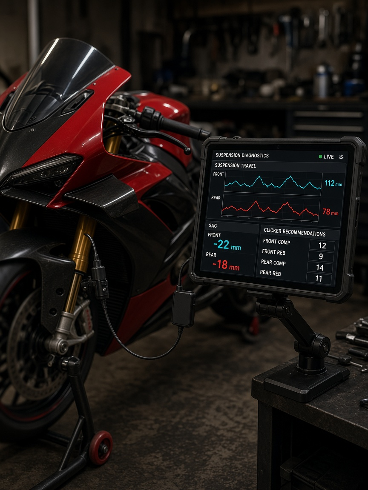
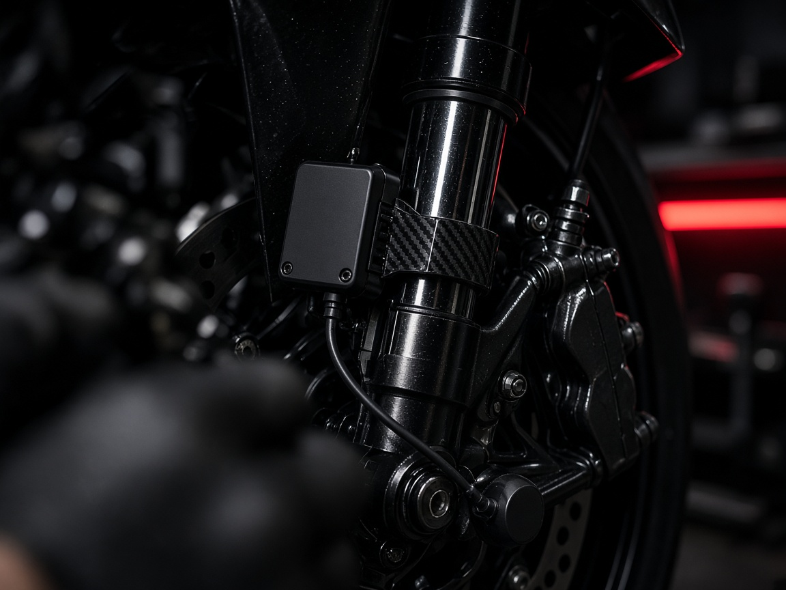
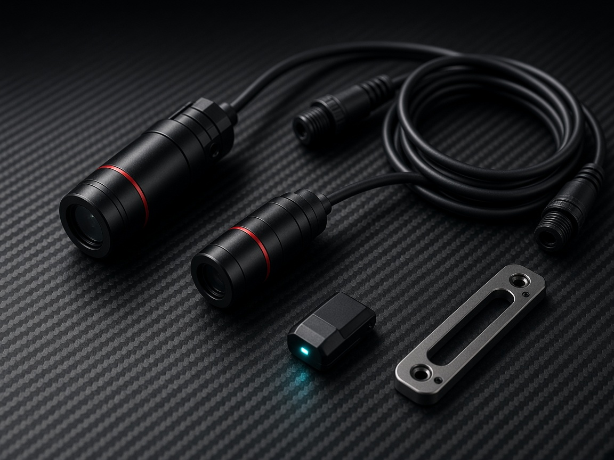

Old way
Friend holds the bike. You crouch with a ruler. Preload guess. Clickers by folklore. One bad session and the front is still packing.

ApexSag · private kit preview
Patent-Pending TelemetryDigital sensors + an iPad. Sit on the bike, ride a lap, and read race sag and damping in millimeters — no helper, no tape measure, no “feels a bit soft.”
Join BetaThe pit-lane problem
Old way
Friend holds the bike. You crouch with a ruler. Preload guess. Clickers by folklore. One bad session and the front is still packing.
ApexSag
Clamp the sensors. Open the iPad. Static sag, rider sag, and travel traces update live. Smart Clicker AI suggests compression and rebound from your weight, surface, and the lap you just rode.

Workshop bay — iPad app reading fork travel while the bike sits on a stand.
What the kit does

Laser / string-pot sensors on fork and shock talk to the app. Sit on the bike. Free sag and race sag appear in millimeters before your boots find the pegs.
32 mm
Rider sag · target 30–35
Comp
−2
clicks
Reb
+1
clicks
Preload
+3
mm
Travel trace · last out-lap · no bottom-out
The app weighs rider mass, track temp, and the travel graph, then tells you how many compression and rebound clicks to turn — and whether preload is still in the window.

Keep the sensors on for a session. ApexSag records travel, packing, and bottom-out events at speed so the next clicker change is from data, not from the guy in the next awning.
How it works
Attach the sensors
Clamp the front and rear pots. Pair the wireless dongle to the iPad. About two minutes.
Sit on the bike / ride a lap
Static and rider sag first. Then roll an out-lap if you want damping from real bumps, not the paddock floor.
Turn what the iPad says
Preload, compression, rebound — numbered clicks. Recheck sag. Done.
Hardware kit

The machine


Leave an email. We’ll ping track-day testers when the first 40 kits leave the bench.